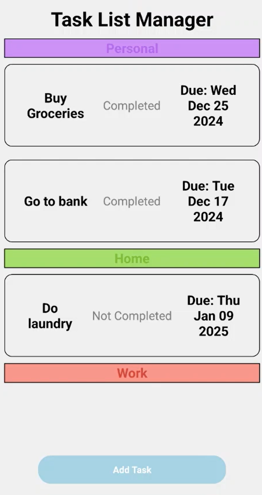

Task List App Manager

This is a task list app manager, whereby users are able to list down all their pending tasks. They can add or remove tasks based on the state of complete or incomplete, and they can also check the percentage of how much they have completed.
Tools & Apps Used
- Webstorm App – Used for writing all the programming code for the website.
Concept
It is an application to allow users to track down all their pending tasks and a set due date so that they are able to keep track of what they have due, without the need to rush for it.